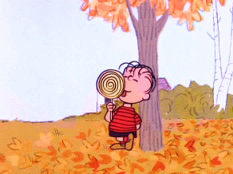
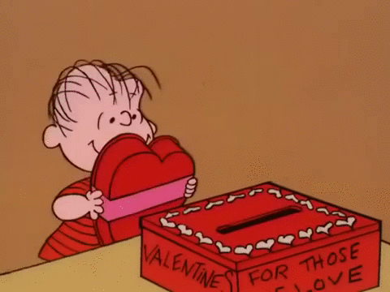
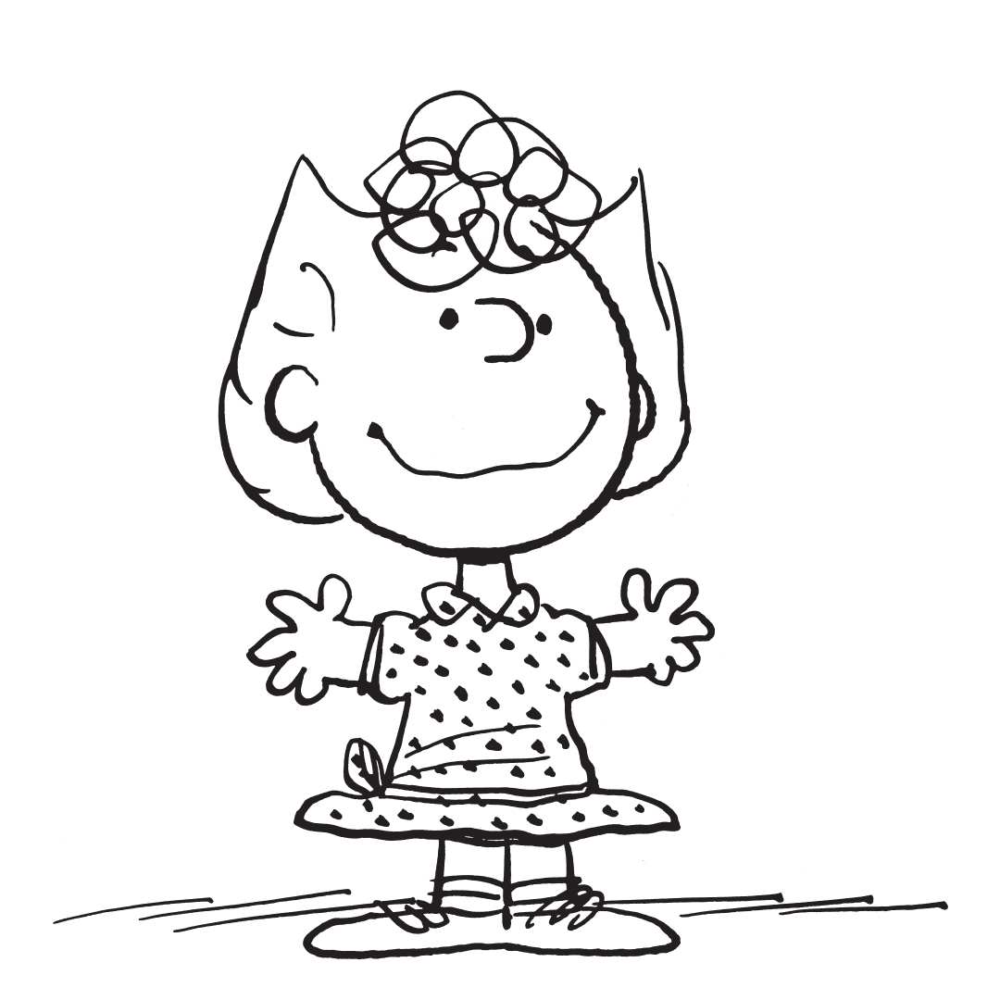

ABOUT

-
찰리 브라운은 충서스럼고 결단력이 있으며 약간 소망 스럽습니다.
그는 진정한 친구이자 헌신적인 야구 매니저이며 자신의개 스누피를 돌볼때 매우 책임감이 이있습니다.
찰리 브라운은 포기해야 할 때에도 결코 포기하지 않습니다. 그는 다른 사람을 돕는 것을 좋아하지만, 최선을 다해 노력합니다.
그는 자신을 도울 수없는 것 같습니다.


-
스누피는 평범한 비글이 아닙니다.
그는 책 애호가이자 책 작가입니다. 그는 미술 수집가이자 루트 맥주 감정가입니다.또한, 그의 멈출 수없는 상상력은 그의 삶을 평범하지 않게 유지하는 데 도움이됩니다.
플라잉 에이스로서 그는 레드 바론과 영웅적으로 싸 웁니다 Joe Cool으로서 그는 캠퍼스의 큰 개입니다. 그러나 그의 개집에서 낮잠을자는 상상의 모험은 없습니다. 특히 그 둥근 머리 꼬마가 그를 위해 만든 잘 어울리는 저녁 식사를하게됩니다.

-
Woodstock은 훌륭한 전단이 아닙니다. 사실 그는 자신이 어떤 종류의 새인지조차 모릅니다. 그가 확실히 아는 유일한 것은 그와 스누피가 훌륭한 친구가 될 운명이라는 것입니다. 그는 스누피를 친구의 친구 라고 부릅니다. 이웃에서 그의 우는 소리를 이해하는 유일한 사람입니다. Woodstock은 항상 모험을 떠날 준비가되어 있지만 집에서 편안하게 휴식을 취하는 것과 마찬가지로 행복합니다.

-
그녀는 종종 단순히 우두머리 또는 게으름 뱅이로 일축되지만 루시에게는 강한 의견보다 더 많은 것이 있습니다. 그녀는 단 5 센트에 건전한 조언을 제공하고 그녀의 형제 인 Linus와 Rerun을 찾습니다. 그녀는 언젠가는 위대한 대통령이나 여왕이 될 자신 있고 강하며 긍정적입니다. 그녀의 가장 큰 약점은 슈뢰더에 대한 짝사랑입니다…

-
- 
- 
사려 깊고 정중 한 Linus는 종종 동료들 사이에서 이성의 목소리입니다. 그는 깊은 사상가이자 철학을 공부하는 학생입니다. 야단법석 루시와의 싸움에도 불구하고 아무도 그가 보안 담요를 가지고 다니는 이유를 아무도 이해하지 못한다는 사실에도 불구하고 Linus는 유쾌하게 희망을 품고 있습니다.
- 
-
Sally는 호기심이 많고 모든 것에 대한 답변을 요구합니다. 아이들은 왜 학교에 가야합니까? 왜 디저트를 먼저하지 않습니까? 그녀가 대답 할 수없는 질문에 직면했을 때, 그녀는 고전적인 철학으로 문제를 해결합니다. "누가 신경 쓰나요?!" 그녀의“Sweet Babboo”Linus를 보면 그녀의 심장은 두근 거립니다. 그리고 그녀는 그를 이해하지 못할지라도 항상 그녀의 형인 찰리 브라운에게 도움과 격려를 요청할 수 있다는 것을 알고 있습니다.

-
변덕스러운 음악 천재 인 슈뢰더는 걸을 수 있기 전부터 피아노를 연주 해 왔습니다. 그는 또한 야구와 친구들과 함께있는 것을 좋아하지만, 피아노의 검은 건반 만 칠해져 있더라도 베토벤 곡을 연주 할 때보 다 결코 행복하지 않습니다. 루시가 소나타의 첫 악장을 통과 할 수있을만큼 오랫동안 그를 내버려 둘 수만 있다면!

-
그는 자신의 개인 먼지 구름 속에서 여행 할 수 있지만 Pigpen의 마음과 양심은 분명합니다. 그는 자신이 누구인지 확신하고 존엄성과 존경심으로 자신을 수행합니다. 그는 다른 사람들을 잘 대하고 그들이 자신을 위해 똑같이 해주길 희망합니다 (종종 그렇지 않지만 그는 인내합니다). 피그 펜은 '수많은 세월의 먼지'에 은폐 된 것을 자랑스럽게 생각한다.

-
프랭클린은 바쁜 아이입니다. 그는 야구를하고 기타를 배우고 있으며 수영 클럽과 4H의 회원입니다. 그의 삶은 활발하지만 프랭클린은 친구들을 돕기에 너무 바쁘지 않습니다. 그는 지원적이고 똑똑하며 항상 기꺼이 도와줍니다. 그는 또한 조부모와 함께 시간을 보내고 그들로부터 옛날 에 대해 배우는 것을 즐깁니다 . 그리고 그는 Charlie Brown의 친구들이 조금 이상하다고 생각하지만 갱단의 일원이되어 기쁩니다.

-
페퍼민트 패티는 타고난 운동 선수이자 자신의 야구 팀 매니저입니다. 단순히 스포티 한 것 이상으로 Patricia는 사상가이기도합니다. 그녀는 삶과 사랑을 생각하며 '생각하는 나무'에 기대어 앉아 많은 시간을 보냅니다. 그녀는 공부를 제외하고는 무엇이든 할 수 있습니다. 그녀는 허용하는 것보다 더 예민하고 자신이나 타인에 대한 부당한 대우에 대해 큰 소리로 말합니다. 그녀의 사랑스러운 아버지는 그녀를 "희귀 보석"이라고 부릅니다

-
Marcie는 학교, 자연 하이킹, 가끔 Tiny Tots 콘서트를 즐깁니다. 그녀는 농구와 멜론의 차이를 알 수 없지만 축구 경기에서 친구들을 즐겁게 응원합니다. 그녀는 그녀의 가장 친한 친구 인 페퍼민트 패티를“선생님”이라고 부르고 그녀의 친구 (그리고 마을 건너편에서 온 그다지 비밀스럽지 않은 짝사랑) 찰리 브라운을“찰스”라고 부릅니다.
VIDEO
PICTURE